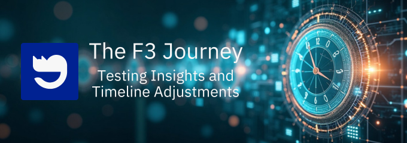
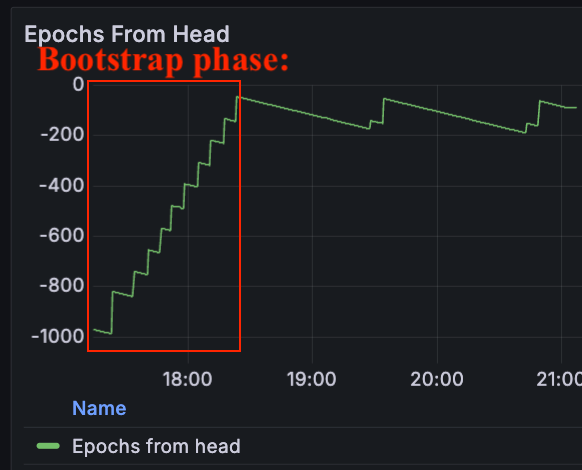
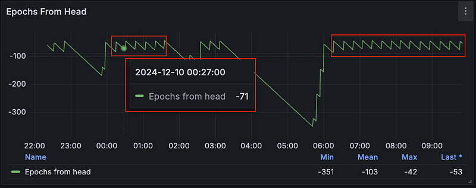

FilOz Blog
The F3 Journey: Testing Insights and Timeline Adjustments

Orjan Roren (@Phi-rjan) · Chinese Translation
In our last blog post, Finality Unveiled: Passive Testing to Mainnet Launch of F3, we shared the potential of Fast Finality (F3) and outlined a timeline targeting deployment in early 2025. Since then, our engineering team has conducted intensive mainnet passive testing on a 100% scale. This was the first time F3 had been tested under real-world conditions at 100% scale of the mainnet, which revealed promising results and important revelations about network behaviour, participation requirements, and the need for some additional optimizations.
This blog update serves two purposes: first, to share the technical insights we gained from the testing efforts, and second, to outline the necessary adjustments to our deployment timeline. These changes reflect our commitment to ensuring F3’s stability and effectiveness when it goes live on mainnet.
🔍 Testing Insights: Successes & Areas for Improvement
Over four weeks, we conducted 47 rounds of passive testing, gradually scaling from a small percentage of network participation to a full 100% network involvement. We would like to give a large shoutout to the whole Filecoin community for asking great questions, notifying us about excessive logs, and raising potential concerns.
Much developer energy was put into optimizing and monitoring metrics, tweaking parameters, and edge-case testing to start and stop the system. We also put out daily passive testing reports in the Github Discussion thread. Our testing focused on two critical phases of F3 operation:
The Bootstrap Phase: Where F3 catches up to the latest stateThe Steady State Phase: The ongoing finalization of the chain after the initial Bootstrap phase
✅ Bootstrapping — Metrics are Looking Good
During the Bootstrap phase In F3, nodes in the network work together to catch up on the most recently published epoch. They do this in groups of 100 epochs at a time until they reach the most recent ones. When F3 starts the bootstrap phase, it typically needs to process about 900 blocks to get up to speed. Below is a picture of the Bootstrapping phase that occurred during one of our passive testing rounds.

Our goal for the Bootstrap phase during passive testing was to tweak the parameters and available knobs we have in F3 — for example, how long we are waiting for messages to arrive, how often we retry sending messages, and such — to make the “stairs” in this chart as short and happen as fast as possible. But there is a big caveat: if we make it too steep, it will increase the bandwidth usage of nodes, which is not ideal and could put nodes under significant stress — so there is a delicate balance here.
After some time observing and tweaking these metrics, we successfully optimized this phase. At a 100% scale of the network, we were able to finish the Bootstrap phase in around 1 hour and 10 minutes, while the node bandwidth usage averaged less than 10 MiB/s download and 10 MiB/s upload. A big success!
😬 Steady State Challenges
With the bootstrap phase of F3 in the rearview mirror, our next objective during the passive testing rounds was to ensure that the steady state of F3 was “good enough” to activate it on Mainnet. And by “good enough”, we mean that the finalization progress is consistent over time and that it is finalising the chain relatively fast.
Over the course of multiple rounds of testing, we realised that there were some additional knobs and parameters that we really wished we could tune, which could allow us to achieve this “good enough” state.
⚠️ First challenge: progress is not consistent enough
We observed that there are periods where F3 was not consistent enough in the steady state. This inconsistency has multiple downsides; builders building apps on top of the F3 APIs need the APIs to be consistent, or else it can give people the impression that things are “broken”. Additionally, such inconsistency leads to periods of higher bandwidth usage and spikes, which is not ideal for node operators.
⚠️ Second challenge: is the steady state “fast enough”? Additionally, in the steady state, we observed that the depth of the “ZigZag” pattern was too large. This means that we were not finalising the chain fast enough for us to consider it good enough to be activated on Mainnet:

Our goal is to tweak parameters such that the depth of this ZigZag pattern is as small as possible, and it should at least be lower than 50 epochs.
These challenges could potentially be resolved by parameter adjustments. However, we faced a conflict: since both the Bootstrap Phase and Steady State phase share a single set of parameters and controls; we couldn’t optimize both simultaneously. Trying to make the steady state more consistent and faster compromised our ability to complete the Bootstrap phase effectively.
Ultimately, the reasons for these challenges stem from the need to have a higher power participation rate by operators in the network to overcome the network congestion that we are meeting further down in the stack with the software currently active on mainnet.
We only need 66% of the power participating in F3 for it to progress, but in practice, we are encountering issues like delayed propagation of messages, which means that we need higher power participating in F3 to move forward. With engineering improvements, we can optimize network congestion paths, but making those improvements takes time, and shipping these improvements requires everyone to upgrade their node, which means that the time window for shipping these optimizations is restricted to network upgrades.
🐾 Revised Timeline and Next Steps
While the F3 implementation has demonstrated promising capabilities, the testing phase has revealed the need for additional optimizations and parameter tuning, like compressing messages and hashing the chain to bring bandwidth usage down. The decision to postpone the original deployment reflects our commitment to ensuring a robust and reliable implementation that can handle mainnet scale operations effectively.
We now expect to activate F3 in Q2 of 2025. This extended timeline allows us to ship additional improvements with the network 25 upgrade that can help optimize network congestion when F3 is running and gives us additional tunable knobs and parameters, allowing us to fine-tune the parameter settings such that we can do another round of passive testing in nv25 and make the steady state of F3 good enough for Mainnet activation afterwards.
We will continue to provide blog updates! The next post in the series will be an in-depth exploration into how we will look at incentivising F3 participation as well as delegated authority for setting parameters to activate F3 in a faster fashion. For now, the extended timeline will allow for comprehensive optimizations, ensuring we are making F3 fast enough at a large scale.